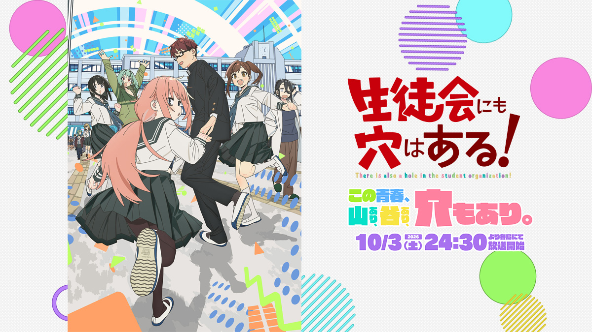

Anime學生會也有洞！
生徒会にも穴はある！ ／ There's a Hole in the Student Council Too!
台巴哈動畫瘋秋番近七日增量（資料日 2026-11-22）仍榜首，週增 225,945（略低過上期 233,721，順位不變）；anime-observer 今期覇権仍第 2（スコア 1.02）。Anime Corner 第 7 週票選由第 6 週第 3 升至第 2（10.13%），唔改變台日主證雙甲位置。11/22 當日觀看跌至第 9（對 11/15 第 7 跌 2，有放送標籤）。
想週末開一包又甜又刺嘅校園零食，呢套仍然係台日討論盤最搶鏡嗰包。文青男主為內申點硬闖生徒會，結果撞上悶騷會長、外表清冷實則溫柔嘅會計、嘴賤得嚟好可愛嘅男孩子，同埋細細隻「棄貓」庶務——互相挖角、互揭短處，笑完又有啲心動。
畫面偏可愛到犯規，節奏係短篇連擊，好啱一邊刷手機一邊睇。呢個星期聲量仍然企喺最前，係因為台灣動畫瘋秋番近七日增量（資料日十一月二十二日）以二十二萬五千九百四十五繼續榜首，雖然略低過上期二十三萬三千七百二十一，但順位完全冇讓；日本側 anime-observer 今期覇権仍然第二。十一月二十二日當日觀看跌至第九，並唔改變台日累積嘅雙甲位置。Anime Corner 第七週票選由第六週第三升至第二，只作國際社群輔助。